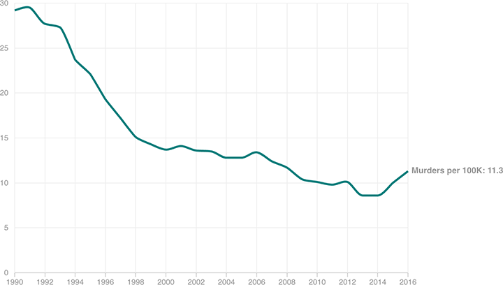

Murder Rates Projected To Tick Up This Year
The murder rate per 100,000 people across the 30 largest cities is expected to tick upwards this year. However, it’s not yet clear whether this will be a long-term trend.
